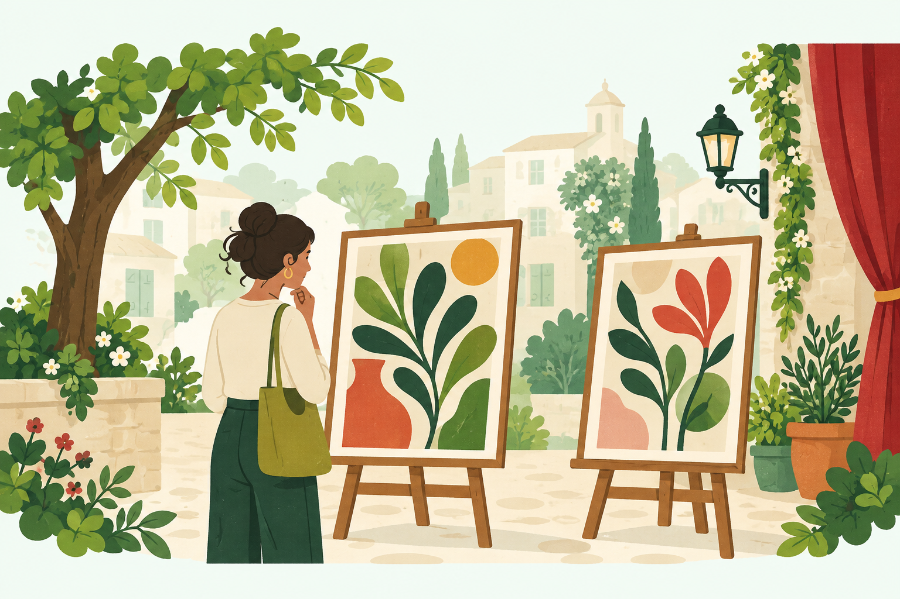
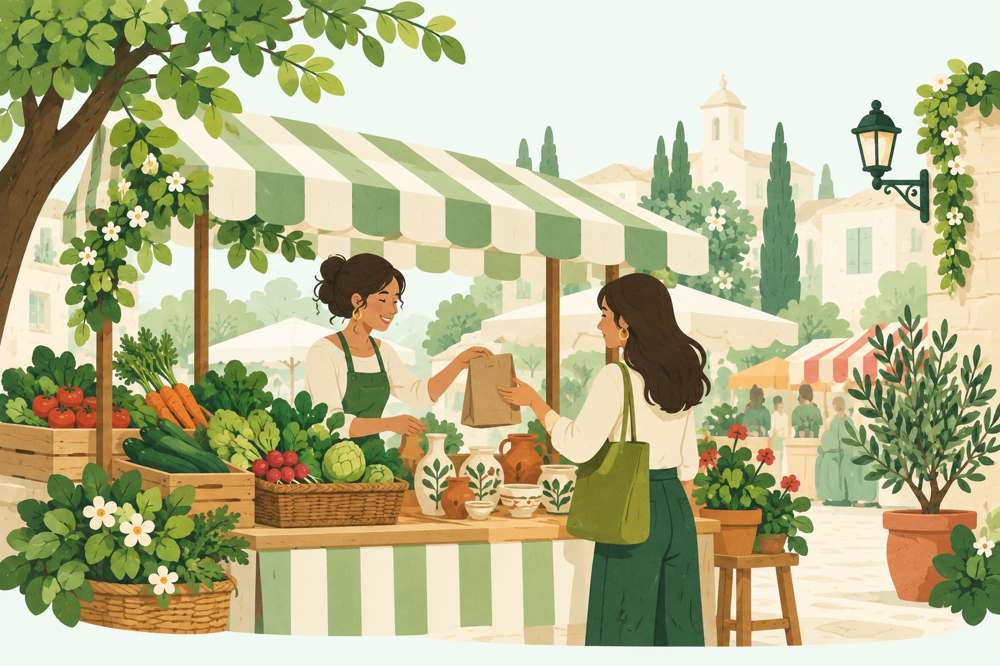
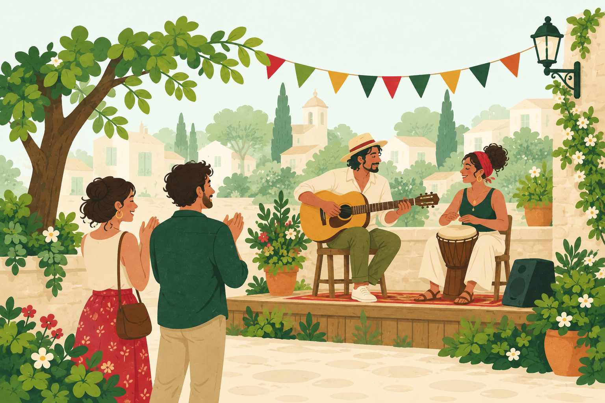
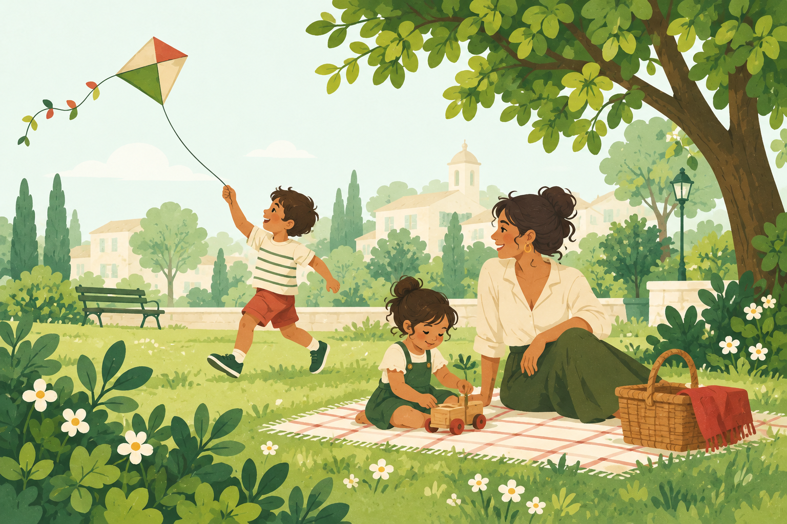
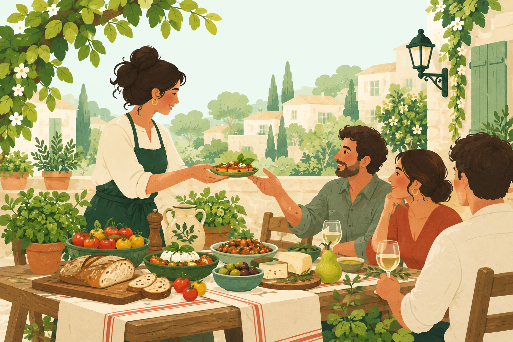
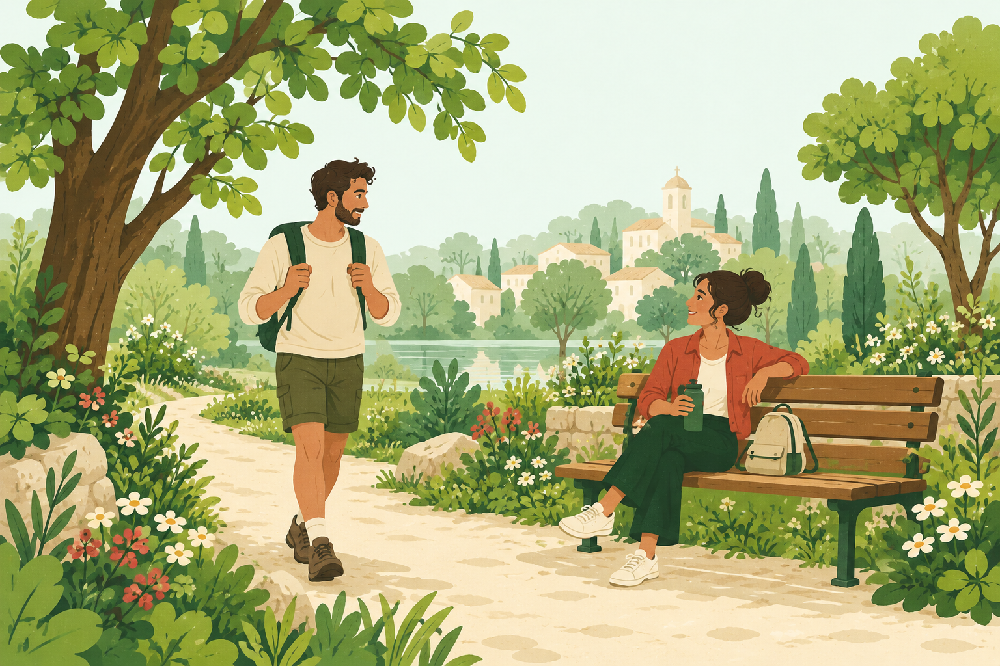
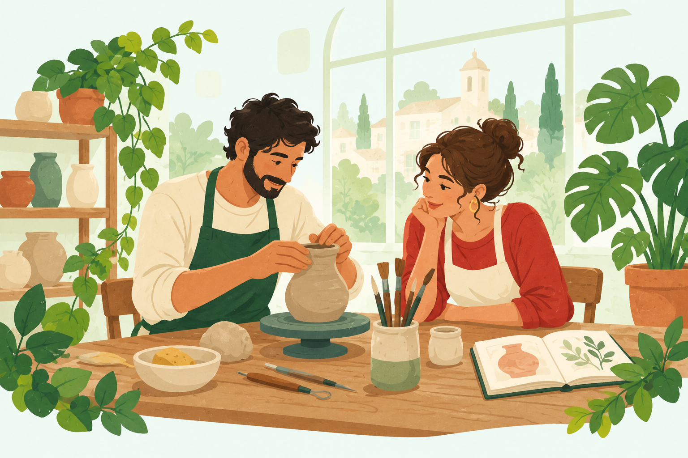
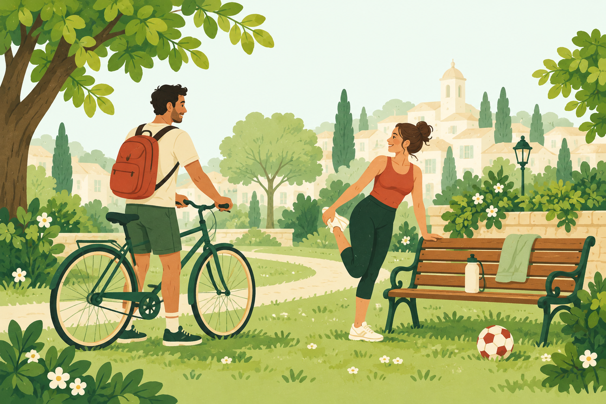
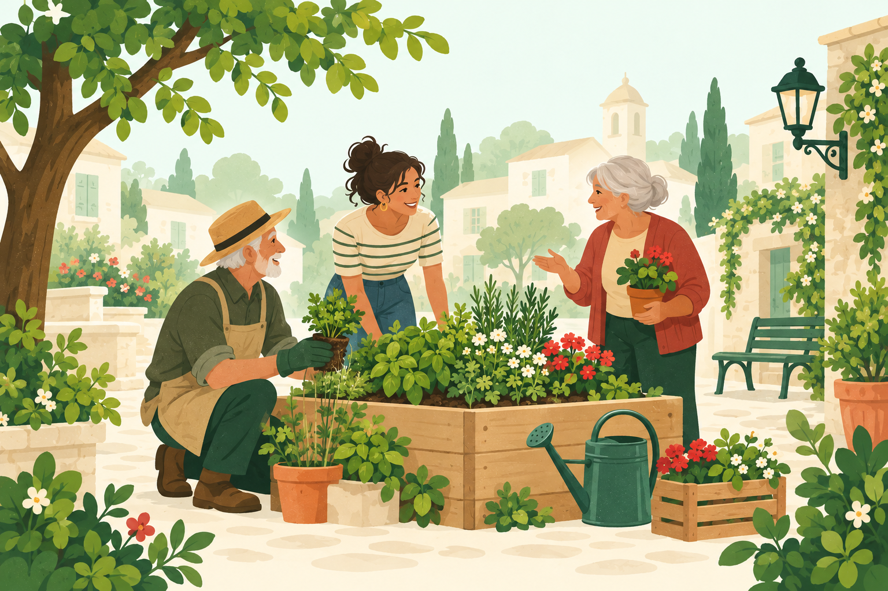
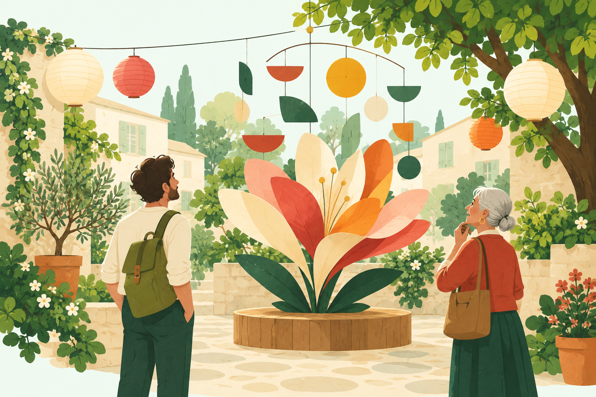

La vie locale, illustrée
Dix couvertures pour les événements sans image. Une collection menthe, encre et anis, inspirée des illustrations du site Moments Locaux. PNG · 1536 × 1024 · 9 octobre 2026.



















